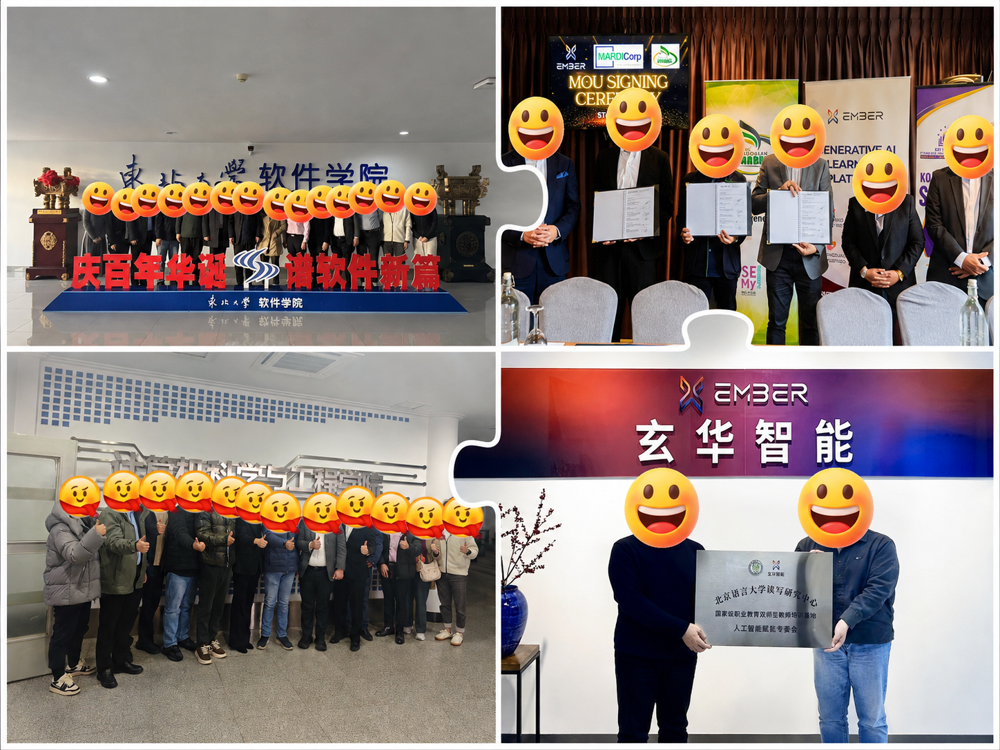

确认安排
确认参会人员、会议时间、试用需求和演示内容，记录尚待确认的事项。
PROJECT 02 / UNIVERSITY LIAISON
协助安排高校产品演示、试点及合作会议，将需求、资料和执行安排整理为可跟进的事项，支持团队按计划推进项目。
01 / 背景与任务
高校合作涉及试用需求、演示安排和多个团队的分工。我协助确认客户需求，准备产品介绍与培训资料，并协调产品团队处理试点中出现的使用问题。
确认参会人员、会议时间、试用需求和演示内容，记录尚待确认的事项。
核对演示账号、产品介绍、FAQ 与培训材料，跟进补充和版本更新。
配合产品演示及试点，记录使用问题，对接产品团队处理反馈。
02 / 行动与结果
会后整理沟通结论，把反馈转为具体待办，明确负责人及完成时间；每周汇总进展和未完成事项，跟进延期原因及下一步安排。
将会议材料、反馈记录与待办事项统一整理，支持试点推进、后续合作沟通和项目交接。

03 / AI 辅助与流程整理
利用 AI 将客户跟进与资料准备中的重复工作整理为 SOP，经人工核对后使用，方便日常执行与实习交接。
时间与人员 → 演示账号 → 资料版本 → 待确认需求。
沟通背景 → 已确认事项 → 待办内容 → 负责人 → 完成时间。
本周进展 → 未完成事项 → 当前问题 → 下一步安排。
以上为工作方法与模板结构示意。